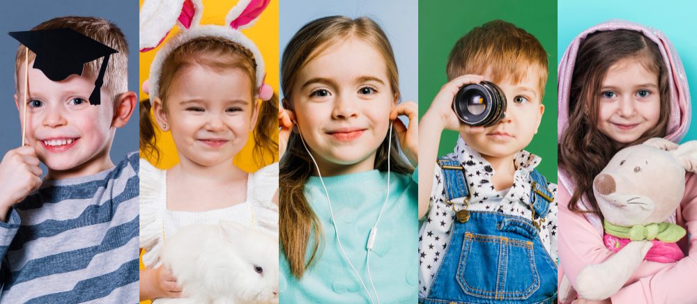
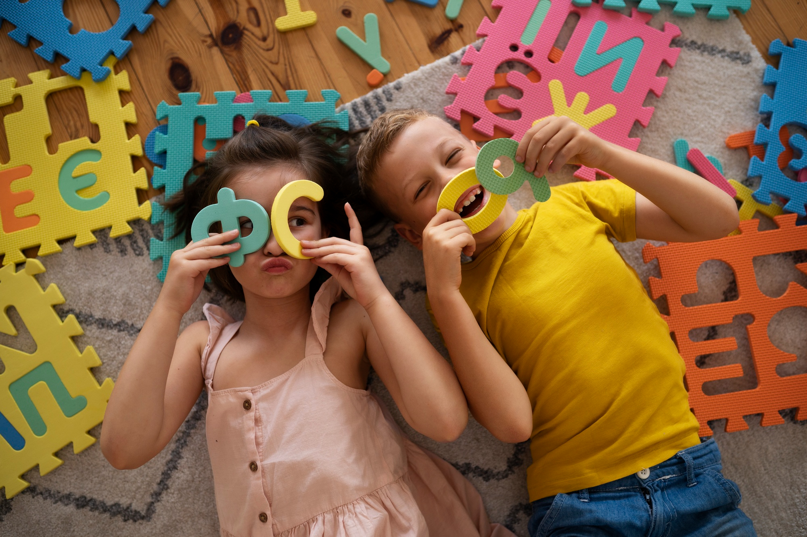
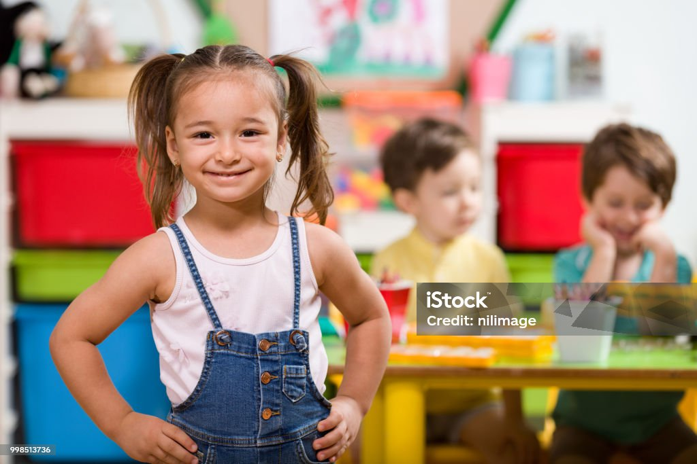

Aprendiendo y sonriendo.

Aprendiendo y sonriendo.

Aprendiendo y sonriendo.
En el año 2022, nace la idea de elaborar un proyecto institucional dedicado a la educación de los niños y niñas menores de 6 años, para cubrir un anhelo personal como madre, y al mismo tiempo, dedicarme al cuidado de estos pequeños a través de esta vocación y bonita labor. En sus inicios, se hizo necesario aprender, conocer e investigar de esta grandiosa laborar en atención a los niñas y niños de kínder, todo esto, con el fin de consolidar un establecimiento de educación prescolar basado en el espíritu de atención educativa de excelencia y servicio de calidad, con la colaboración y confianza mutua de todos sus integrantes. Destacando principalmente los valores de afecto, respeto, disciplina, alegría, compromiso y esfuerzo. Es así como en el año 2022 este proyecto empieza a materializarse con el fin de dotar un sitio acorde a los requisitos que exige el Ministerio de Educación y poner en marcha cada uno de los objetivos propuestos enfocados a la educación de niños y niñas. Hoy día, es un proyecto consolidado comprometido con la excelencia educativa, compromiso con los educandos, sus familias y la comunidad educativa en general. Sabemos que cada año es un nuevo desafío por eso en el 2023 abrimos las puertas del jardín “KINDER GARDEN SMILE” para recibir con amor a las nuevas generaciones de niños y niñas.
Guiar a los niños y niñas a través de una educación integral; basada en el amor, la tolerancia, la participación y el respeto hacia los demás.
En el año 2028 el Jardín Infantil Kinder Garden Smile de Valledupar será un jardín en el que se brindará educación de calidad, con exigencia a nivel cultural y social de la primera infancia, que favorezca el aprendizaje y el desarrollo de niños y niñas